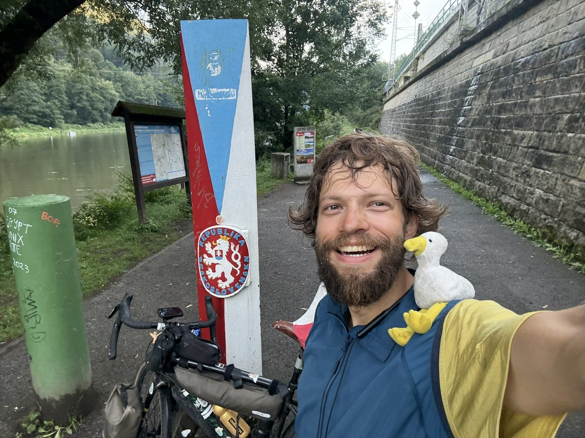
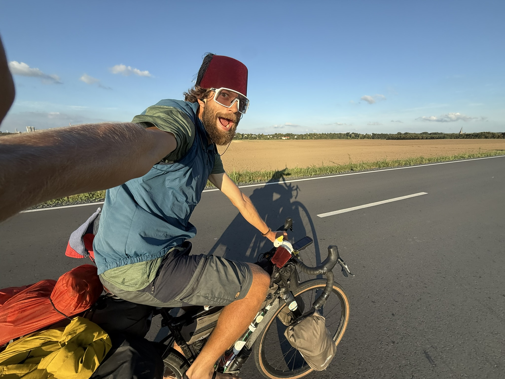
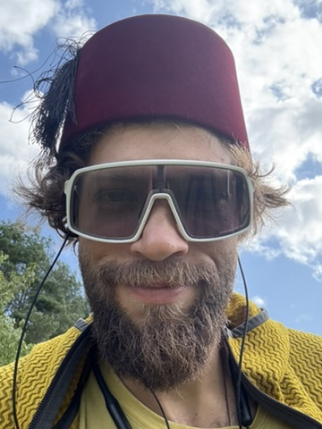
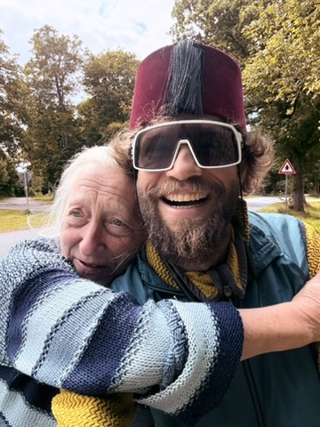
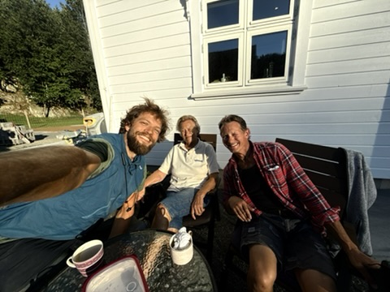
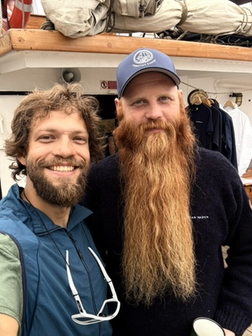

Dal jsem výpověď. Udělal jsem krok do prázdna a sleduji kam mě vede. Čekat na ten správný moment? To není život. To je odkládání života.
Abych na kole udržel balanc, musím jet stále kupředu. Jako v životě. A kolo je pro mě forma svobodného cestování — v kontaktu s prostředím a jeho lidmi.
Možná jedu sám, ale už se tak necítím. Jedu s příběhy lidí, kteří by chtěli, ale už nemohou. A podél cesty potkávám lidi — naslouchám jejich příběhům a sdílím ten svůj.
Jsem Domestik. Podporuji myšlenku důstojného života. Ať je ve svém začátku, nebo se chýlí ke konci. Proto jedu, pro to žiju. Můžu dokud žiju. Žiju dokud můžu.
Jsem Honza. Milovník nevšednosti, dobrodruh, filozof amatér, zkušební technik parních turbín a teď už i cyklista. V roce 2025 jsem si po těžkém životním období koupil kolo a bez předchozího nadšení k cyklistice vyrazil na bikepackingovou tůru do Ázerbajdžánu. Za 93 dní jsem ujel 5 500 km. Po cestě jsem se potýkal s nástrahami okolního světa i těmi ve vlastní hlavě. Cesta mi dala možnost dozvědět se o sobě možná i víc, než bych chtěl. I díky tomu jsem se rozhodl dát výpověď v práci, která slibovala jistoty a finanční stabilitu. Chtěl jsem zjistit, zda mohu žít svůj autentický příběh, nikoli ten, který se ode mě očekává. Dovolit si plnit své sny, dokud to ještě jde.
Během cesty do Ázerbajdžánu jsem se spojil s neziskovým projektem Domestici.cz, který propojuje sport s osvětou a finanční podporou paliativní péče. Na mé dárcovské sbírce se podařilo vybrat celkem 190 tisíc korun, které nyní slouží Hospici sv. Lazara v Plzni a Centru paliativní péče.
A co teď? Jezdím na kole pro Domestici. Rok 2026 je ve znamení vývozu jejich myšlenky mezi mé spoluobčany. Projet Českou republiku — moji vlastní zemi, kterou jsem poslední roky zanedbával na úkor cestování po celém světě. Objevit krásy své vlastní země, poznat lidi podél cesty. Jet pomalu, abych měl čas vnímat své prostředí. A během toho všeho vybrat 352 tisíc korun na práci Domestici.
Proč jsem si vybral téma paliativní péče? Protože každému z nás jednou dojdou síly. A v té cílové rovince si každý položí stejnou otázku: Doopravdy jsem život zažil, nebo jen přežil? Lidé na konci života říkají: chci žít, ne jen umírat. Já nevím dne ani hodiny svého konce. Proto si mohu dovolit se dnes ptát: chci svůj život žít, nebo jen přežívat?
„Život není o tom, jak je dlouhej, nýbrž o tom, jak je kvalitní."






Nikdy jsem nejezdil na kole. Ani jsem nechtěl. Pak ale přišlo těžké životní rozhodnutí. Chtěl jsem si vyčistit hlavu. Být sám, střetávat se sám se sebou. Se svými myšlenkami. Se svojí osobností. Se světem a jeho lidmi, s nekomfortem, ale i s radostí z větru ve vlasech. I bez lásky k cyklistice jsem nakonec ujel 5 500 km, zažil spoustu příběhů. Po cestě jsem otevřel sbírku na podporu paliativní péče, při které se vybralo 190 tisíc korun. Z této cesty čerpám dodnes.
Tou cestou to neskončilo. Tou to všechno teprve začalo.
Klikni na zemi a podívej se na fotky, příběhy a zápisky z tamní cesty. ● Pracuje se na tom. Brzy interaktivně.